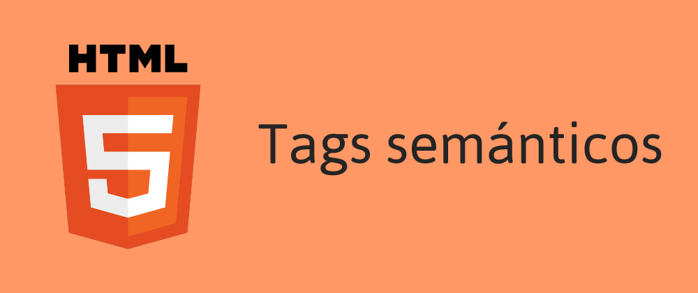

Etiquetas semánticas de HTML5
La quinta versión del lenguaje de marcado HTML fue publicada hace ya 6 años (29 de octubre de 2014) a manos del World Wide Web Consortium (W3C). Aparte de los importantes cambios en las etiquetas ya existentes (como #input) y la eliminación de otras (como #xmp>), uno de los cambios mas importante es la adición de nuevas etiquetas. Si bien varias de estas vinieron a solucionar nuestra vida como programadores, otras tienen una funcionalidad idéntica a la mítica etiqueta <#div>. Estas son las etiquetas semánticas.Las etiquetas semánticas ayudan a la implementación de los estándares de la Web Semántica, cuya finalidad es hacer el contenido de internet legible para aplicaciones informáticas. Uno de los usos mas importantes de este tipo de etiquetas es la de marcar la información de la pagina para ser indexada por los buscadores web como Google.